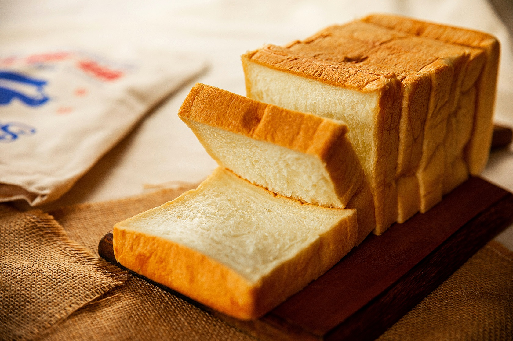

Sandwich Bread

Description
This year, my daughter has started making her own lunch for the first time. As a result, I find we are going through sandwich bread at a quicker pace than usual. I wanted to try making our own sandwich bread from scratch.
I really like how this recipe only makes a single loaf of bread vs the more standard two. Don't be intimidated by making your own bread - once everything is thrown in the mixer the rest of the time is fairly hands off.
Ingredients
- 2 1/2c bread flour
- 2 tsp instant or rapid rise yeast
- 1 1/2 tsp salt
- 3/4c whole milk, room temp
- 1/3c water, room temp
- 2 Tbsp unsalted butter, melted
- 2 Tbsp honey (Note: I have subbed maple syrup without issue.)
Steps
- Combine dry ingredients in the bowl of a stand mixer. Combine all wet ingredients into a bowl or four cup liquid measuring cup - stir until honey is fully dissolved.
- Add dough hook attachment and turn mixer on to lowest speed. Slowly pour in liquid mixture. Once all liquid is incorporated, increase speed to medium low and mix for approx 8min. Dough should be smooth, elastic, and clear sides of bowl.
- Remove dough and form into a ball. Place in a well oiled mixing bowl, cover with saran wrap. Allow dough to rise until doubled in size (1.5-2hrs.)
- Oil a 8.5in x 4.5in loaf pan. Press down to deflate dough. Remove dough from bowl and gently press/stretch into a 8in x 6in rectangle.
- Roll dough into firm cylinder (roll starting on longest side to make long tube.) Pinch seam closed and place seam side down in loaf pan.
- Cover with plastic that has been lightly oiled. Allow to rise for 1 - 1.5hrs. Dough should be 1in above lip of bread pan and spring back a little when poked gently.
- Heat oven to 350 degrees. Bake loaf 35-40min - until deep golden brown on top.
- Let loaf cool for 15min and then remove to cool on a wire rack (otherwise the bottom will get soggy.)